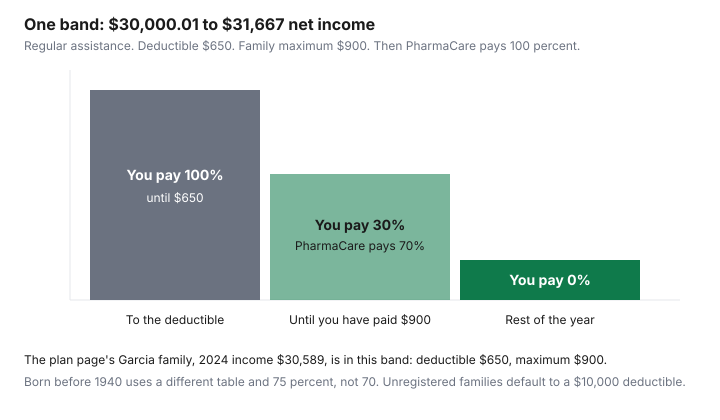

Healthcare · Canada
BC Fair PharmaCare in 2026: Registering, Income-Based Deductibles, and Family Maximums

Fair PharmaCare helps B.C. families pay for many prescription drugs, dispensing fees, and some medical supplies. It is income-tested, and it is not turned on by your MSP enrolment alone. The plan page, updated 27 August 2026, says everyone in B.C. is encouraged to register, and that if you do not register, or if your income cannot be verified, the family deductible is $10,000. After that default deductible, PharmaCare covers 100 percent of eligible costs for the rest of the year. Until then, you pay. This page is how registration, the 2026 income year, and one published income band work. It is not medical advice. B.C. PharmaCare, not a pharmacy poster, sets the deductible.
Key takeaways
- Register once. Temporary coverage starts the day you register online or by phone. Return the CRA consent within 30 days or the deductible becomes $10,000.
- Coverage for a year uses income from two years earlier. The January 2026 example on the plan page uses 2024 income of $30,589, a $650 deductible, and a $900 family maximum.
- After the deductible, PharmaCare pays 70 percent, or 75 percent if someone in the family was born before 1940. After the family maximum, it pays 100 percent. The enhanced table is a different set of bands, not a discount stuck on the regular band.
- A private plan does not stop you from registering. Fair PharmaCare can sit behind it. It does not pay costs from years before you registered, or from months when MSP was not active.
- Plan NP, from 1 March 2026, pays for many diabetes drugs, menopause hormone therapy, and contraceptives outside the Fair PharmaCare deductible. You still register for Fair PharmaCare for everything else.
Why you must register: Fair PharmaCare isn't automatic
MSP enrolment is a condition of Fair PharmaCare. It is not registration.
You register online or by calling 1-800-663-7100. You need Personal Health Numbers for every family member, social insurance numbers for adults, net income on line 23600 from the Canada Revenue Agency notice of assessment from two years ago, and any Registered Disability Savings Plan income on line 12500. Temporary coverage starts the same day, using the income you enter. If that income is wrong, call immediately. There is no fee to apply for MSP, PharmaCare, or Supplementary Benefits. Use forms on gov.bc.ca.
After you register, PharmaCare sends a consent form so it can check income with the CRA. Return it within 30 days. If you do not, temporary coverage ends and the deductible is set at $10,000. Confirmation with the CRA can take up to 90 days. The confirmation letter, sent within 30 days of verification, is the coverage for the calendar year. A family is one or two spouses, with or without children. Both spouses register. If one spouse is not eligible, their income is still included. Dependent children are 18 or under, or 19 to 24 and in school full time, on the parent's MSP, not married, and living with that family. At 19, a young adult who is not a dependent registers on their own.
A private health plan does not block registration. The page says you may still get help with costs Fair PharmaCare covers. It does not pay for previous years, and it does not pay for a period when MSP was inactive. The workplace drug guide is the private plan. Fair PharmaCare is the income-tested layer under what that plan does not pay. The provincial comparison shows how different that is from Quebec, where a private plan can be mandatory. Quebec's rates are a premium plus a monthly deductible, not these income bands.
How 2024 net family income sets your 2026 deductible and family maximum
The plan page says PharmaCare calculates coverage each year from the income it receives from the CRA, and that each year's coverage is based on income from two years prior. The worked example is dated January 2026 and uses family income from 2024.
That is the "2024 income sets 2026 coverage" rule, shown on the page rather than inferred. If you receive a letter about a tax year other than two years ago, use the paper Taxes Filed form. If you could not file in Canada two years ago, the Proof of Income Affidavit is the path the page names.
The assistance-levels page, updated 1 May 2026, prints the regular bands. The linked PDF of regular assistance levels, as of the same date, prints the same dollar pairs. The PDF file's own modification date is 21 January 2019. The dollars used below are the ones on the 1 May 2026 HTML table, which matched the PDF. Three bands, read from that table:
| Family net income | Deductible | Family maximum | PharmaCare share after the deductible |
|---|---|---|---|
| $0.00 to $13,750.00 | $0.00 | $0.00 | The maximum is already $0, so eligible costs are covered at 100 percent. Several lower bands in the table are also $0 and $0. |
| $30,000.01 to $31,667.00 | $650.00 | $900.00 | 70 percent until the family has paid $900 in total, then 100 percent. The Garcia example, 2024 income $30,589, is in this band. |
| $65,000.01 to $70,833.00 | $2,000.00 | $2,675.00 | 70 percent until the family maximum, then 100 percent. |
The Garcia family on the plan page registers in January. Their 2024 income is $30,589. The deductible is $650 and the family maximum is $900. From January to May they pay the full eligible cost until $650. PharmaCare then pays 70 percent. Between June and September the page says prescriptions worth $833 in eligible costs produce a PharmaCare payment of $583, which it describes as 70 percent of $833, and a family payment of $250. That $250 plus the $650 deductible equals the $900 maximum. From October to December, PharmaCare pays 100 percent. In January 2027 the deductible resets. Eligible costs include dispensing fees of up to $11 per prescription. A fee above $11 is not fully eligible. The dispensing-fee guide is how to read the fee on a receipt. This B.C. $11 limit is a PharmaCare rule about what counts toward the deductible, not a price list for a warehouse pharmacy.
After the deductible: 70% coverage, then 100% past the family maximum
Before the deductible, you pay 100 percent of eligible costs. After it, PharmaCare pays 70 percent and you pay 30 percent, and your 30 percent counts toward the family maximum.
The deductible you already paid counts too. After the family maximum, PharmaCare pays 100 percent for the rest of the calendar year. The chart is that step for the $30,000.01 to $31,667 band only. A different band has different dollar stops and the same percentages.
Families who struggle to pay the deductible at the start of the year can look at the Monthly Deposit Payment Option named on the plan page. This article does not restate payment dates that the program section does not print. Call 1-800-663-7100 before you assume a monthly plan has started. Costs that are not eligible never move the deductible. Plan NP fills, described below, also do not move it.
Enhanced assistance for those born before 1940
If a family member was born before 1940, PharmaCare pays 75 percent of eligible costs after the deductible, not 70 percent, until the family maximum, and then 100 percent. The enhanced table is not the regular table with a new percentage.
The income breaks and the dollar amounts are different. On the assistance-levels page updated 1 May 2026, a family net income of $30,000.01 to $33,000.00 on the enhanced table has a deductible of $0 and a family maximum of $400. The same income on the regular table is not that row. Someone born before 1940 in a household at $30,589 should be read on the enhanced table, not given the Garcia family's $650 and $900.
One more enhanced row, so the table is not a single anecdote: $50,000.01 to $52,500.00 has a deductible of $1,000 and a family maximum of $1,500, and PharmaCare's share after the deductible is 75 percent. Do not interpolate a band that is not printed. The calculator on the assistance page is the tool for an income between the rows you care about. This guide copies only rows it read.
Asking for a reassessment when income drops
The plan page says if your income has dropped by 10 percent, you may want to apply for an income review. The program page does not print the form's turnaround time or the documents. Start from the gov.bc.ca income-review path, or call 1-800-663-7100, and keep the letter that confirms the new deductible. A typed error at registration is a phone call right away, not a year of the wrong band.
Family changes go through the updating-coverage page: adoption, separation, divorce, death. A spouse's income stays in the calculation until that update is accepted. The Taxes Filed form is for people who received a letter asking them to confirm they filed, so PharmaCare can set the year's deductible and maximum. It is not the income-drop review. The B.C. home owner grant is a different income-tested program. The home owner grant guide does not update your PharmaCare file, and a PharmaCare registration does not update the grant. File each one on its own page.
National pharmacare coverage in BC: contraception and diabetes medications
B.C. PharmaCare Plan NP launched on 1 March 2026. The page, updated 29 June 2026, says it covers many diabetes medications, menopause hormone therapy, and contraceptives for B.C. residents enrolled in MSP, when the prescription is dispensed in B.C. Coverage is automatic.
You do not register and you do not submit receipts. You present the prescription and your BC Services Card. Insulins do not need a prescription. Fully covered items cost nothing. Some products are only partly covered, and a pharmacist may be able to substitute a fully covered version under the low-cost alternative program. A few diabetes drugs, including saxagliptin, linagliptin, and pioglitazone, need Special Authority before the fill.
Plan NP dispenses do not count toward the Fair PharmaCare deductible or family maximum. A year of metformin at no charge does not move you toward the $650 deductible in the Garcia example. Other prescriptions still do. Plan NP does not cover people from other provinces or prescriptions dispensed outside B.C. The national pharmacare guide is the set of federal agreements, including B.C., Manitoba, P.E.I., and Yukon. The B.C. page is the one that tells a B.C. resident what happens at a B.C. counter. Diabetes devices and supplies were expanded on 1 April 2026 under a separate note on that page. Read the device list there rather than assuming every meter is included.

Sources
- Province of British Columbia, Fair PharmaCare plan, updated 27 August 2026: registration, $10,000 default deductible, two-years-prior income, Garcia example, 70 and 75 percent, $11 dispensing-fee limit, 10 percent income drop, 1-800-663-7100. As of 27 Sep 2026.
- Fair PharmaCare assistance levels, updated 1 May 2026, and the regular income-band PDF as of the same date: the three bands in the table. PDF metadata modified 21 January 2019; the HTML table is the dated source for the dollars.
- Enhanced bands on that 1 May 2026 page, including $30,000.01 to $33,000.00 at a $0 deductible and a $400 maximum, and $50,000.01 to $52,500.00 at $1,000 and $1,500.
- BC PharmaCare Plan NP, updated 29 June 2026: launch 1 March 2026, diabetes medications, menopause hormone therapy, contraceptives, no registration, fills do not count toward Fair PharmaCare.
Frequently asked questions
How do I register for Fair PharmaCare?
Register online or call 1-800-663-7100. You need Personal Health Numbers for the family, social insurance numbers for adults, and net income from line 23600 on the notice of assessment from two years ago, plus any RDSP income on line 12500. Temporary coverage starts the day you register. You must return the CRA consent form within 30 days. If you do not, temporary coverage ends and the deductible is set at $10,000. There is no fee to register.
Which year's income is used for 2026?
The Fair PharmaCare plan page, updated 27 August 2026, says each year's coverage is based on income from two years prior. Its January 2026 example uses 2024 family income. Bring the notice of assessment from two years ago, line 23600, and any amount on line 12500. A letter that asks about a different tax year uses the paper Taxes Filed form, not the online one.
What happens after I reach my deductible?
PharmaCare pays 70 percent of eligible costs, or 75 percent if a family member was born before 1940. You pay the rest, and those payments count toward the family maximum. After the family maximum, PharmaCare pays 100 percent of eligible costs for the rest of the year. Eligible costs include dispensing fees of up to $11 per prescription. The deductible and the maximum reset the next January.
Can I get my coverage recalculated if my income drops?
The plan page says if your income has dropped by 10 percent, you may want to apply for an income review. It also says to call right away if you typed the wrong income at registration. A family change such as separation, divorce, or death is handled on the updating-coverage page, not by ignoring the old deductible. This article does not print a processing time for an income review, because the page did not print one.
Does national pharmacare change anything in BC?
Yes, for listed products. Plan NP started 1 March 2026. It covers many diabetes medications, menopausal hormone therapy, and contraceptives for B.C. residents enrolled in MSP, with the prescription dispensed in B.C. You do not register for Plan NP. Fully covered items cost nothing at the counter, and those dispenses do not count toward the Fair PharmaCare deductible or family maximum. Other drugs still use Fair PharmaCare.
Researched and drafted with AI assistance and fact-checked against official Canadian sources. How we create content.